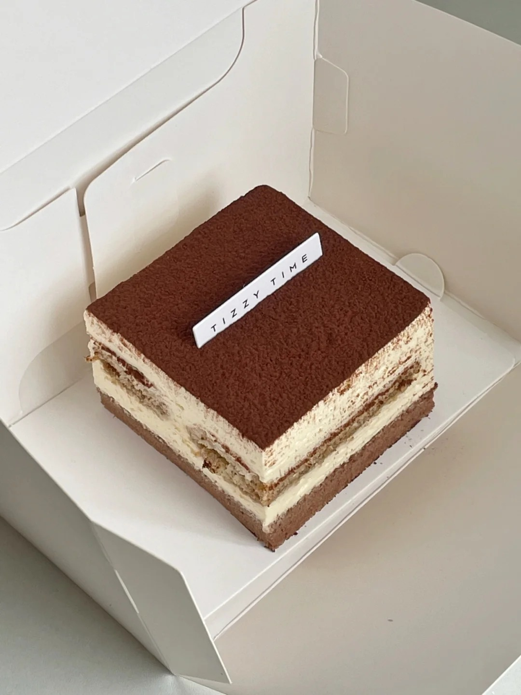

提拉米苏



提拉米苏（Tiramisu）是一种源自意大利的经典乳酪慕斯蛋糕。在意大利语中，“Tiramisu” 有 “带我走，拉我起来” 的意思，寓意吃了此等美味，就会幸福得飘飘然，宛如登上仙境。提拉米苏的口感丰富多变，层次分明。手指饼干经过咖啡和酒的浸泡后，变得柔软且带有浓郁的咖啡香，绵密的奶酪糊香滑且甜润，最上层可可粉的干爽和苦涩，与奶酪糊的甜润形成鲜明对比，带来丰富的味蕾体验。其起源可追溯到 17 世纪意大利西北方的甜品 Zuppa del Duca 或 Zuppa Inglese，但现代意义上的提拉米苏直到 20 世纪 60 年代才在意大利威尼斯的西北方一带出现。关于它的由来，有多个版本的传说。其中一个浪漫的故事是，二战时期，一位意大利士兵的妻子为即将出征的丈夫制作了这款糕点，将所有能吃的饼干、面包等搅碎拌在一起，希望丈夫在战场上吃着它能想起家与爱人。 制作流程通常先制作手指饼干，将蛋白、蛋黄分离打发后与低筋面粉混合，挤成条状烤制。然后制作咖啡酒，将浓缩咖啡与酒混合。接着制作奶油奶酪酱，将蛋黄、马斯卡彭奶酪、淡奶油等混合拌匀。最后，将手指饼干蘸取咖啡酒铺在模具底部，再倒入奶油奶酪酱，重复多层，冷藏凝固后，表面筛上可可粉。
制作方法：